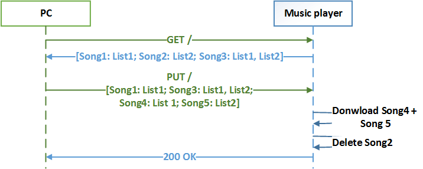
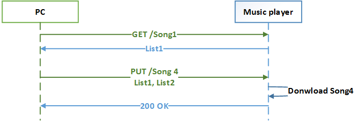
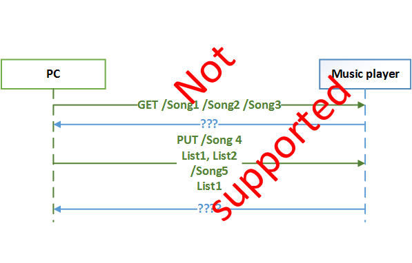
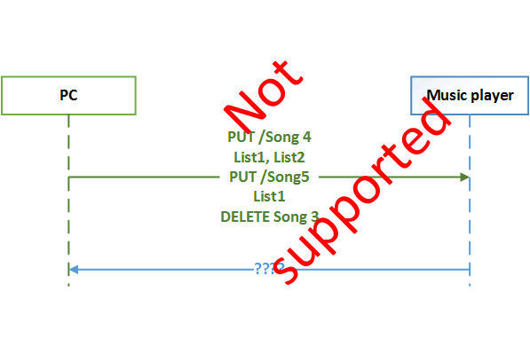
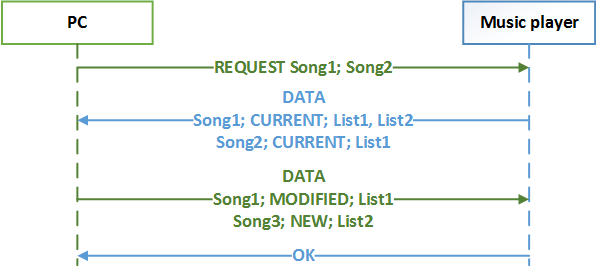

Bare HTTP is Not Fully RESTful - A Deeper Look at REST Architectural Style and How HTTP Shows Protocol Deficiencies
The article tries to map a deeper, more generic nature of REST architectural style into HTTP to show protocol deficiencies.
Introduction
In my previous article (please read it first), I tried to describe how I understand the REST architectural style irrespectively of any communication protocol.
Mapping Core of REST
Looking for the generalization I have defined the core of REST as a set of concepts consisting of transfer, state, representations, safety, and idempotence.
Transferring state using representations maps easily into HTTP.
As HTTP demands a request-response communication model, verbs, describing
commands, have been introduced to tell the requests demanding data from
requests providing data apart. These verbs are GET and PUT
(or POST). This already introduces some kind of RPC into the
picture but does not break REST yet. HTTP can carry any data so applications
are free to construct their representations. Figure 1 shows a music player
example using HTTP with a textual representation.

According to the HTTP standard, GET is supposed to be a safe
operation and PUT is supposed to be idempotent.
Stating that, the core of REST can be mapped into HTTP.
Mapping State Patching
In order to use state patching technique which is an inevitable optimization in real applications where the state is most often huge, there needs to be a possibility to uniquely identify state chunks. HTTP uses URIs for that purpose calling addressable state chunks "resources". Figure 2 shows an example of reading and writing a state chunk.

The problem occurs while transferring multiple chunks in a transactional manner.
Transactional Read
In order to read multiple state chunks (resources) transitionally, all of
them need to be requested by the client in one self-contained message and then
sent by the server in another self-contained message. This is possible only
if we can construct a URL encompassing all of the requested resources (for example,
addressing a group of resources), as HTTP itself does not support multiple URIs
within a single GET request (see Figure 3). A similar situation
applies to the response message, as there is no way to send multiple resources
along with their URIs back to client within a single HTTP response message.
It is possible to use a POST request with some artificial URI not
related to any resource and a payload-carrying a list of requested URIs.
It is also possible to forge response with representation containing a list of
all requested resources along with their URIs, but such a solution constitutes a
new "inner protocol" that merely uses HTTP as a transport mechanism breaking
layer isolation along the way.

Transactional Write
The same as with transactional read, a transactional write of multiple
unrelated chunks of state is not supported by bare HTTP. PUT or
POST requests support neither multiple URIs and representations
within a single HTTP request message nor multiple status codes within a single
HTTP response message. It is true that POST supports multipart
payload but all of those parts are addressed to a single URI, so it is only
a partial, not satisfying solution (it is possible to correlate each part of
a multipart message with a UIR by extending HTTP with non-standard headers though).
Patching Variable State
In the previous article, I described how RESTful patching of variable state
can be achieved by the introduction of metadata denoting "timelines" of state
chunks. This can be only partially mapped to HTTP. The NEW and MODIFIED
adjectives can be (semantically incorrectly) mapped into the
PUT verb, which behaves differently whether a target resource
exists or not. The MISSING adjective can be mapped into a
DELETE verb. The server should react to PUT and
DELETE in an idempotent. The problem is that patching a variable
state of multiple unrelated resources where some of them are NEW,
some MODIFIED, and some missing is not supported by HTTP as only
one verb is allowed within a single message (see Figure 4).

Conclusion
HTTP is a good protocol that serves its purpose well. It gave birth to REST and was influenced by it, but it is not 100% RESTful (it is actually an RPC that RESTful behavior can be built upon). People have tried to work around these deficiencies by designing clever URIs and representations, breaking layer isolation along the way (see this book for some recipes), but in the end, the bare 100% standard HTTP cannot provide true RESTful communication except cases when "the whole" state gets transferred every time.
Appendix: How a True RESTful Protocol Should Look Like
A truly RESTful protocol covering all exemplified use cases may use any transport it sees suitable but shall define massages as follows:
- Message type: enumeration (
REQUEST,DATA,ACKNOWLEDGEMENT) – to discern message type (not every message type needs to be used) - For
REQUESTtype:- List of unique chunk identifiers: there can be a special identifier
for "entire state" like "
/" orNULL; URI is a good candidate but not the only one
- List of unique chunk identifiers: there can be a special identifier
for "entire state" like "
- For
DATAtype:- List of state chunks:
- For every chunk:
- Chunk identifier;
- Chunk "timeliness" tag: enumeration (
NEW,MODIFIED,MISSING,CURRENT); - Chunk representation: any data format;
- For every chunk:
- List of state chunks:
- For
ACKNOWLEDGEMENTtype:- Success/error code.
Figure 5 shows an example of message exchange of a proposed protocol.
